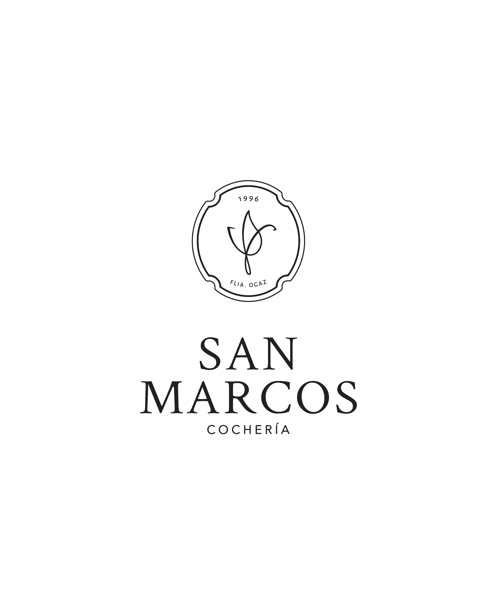

Organización completa y acompañamiento en cada etapa de la despedida.
Una opción respetuosa que permite a cada familia elegir cómo preservar o despedir la memoria de su ser querido.
Coordinación de traslados locales, provinciales, nacionales e internacionales.
Conservación y cuidado estético del ser querido para su despedida, cumpliendo todos los protocolos sanitarios.
Coordinamos arreglos florales especiales para cada homenaje, según tu deseo y presupuesto.
Soluciones anticipadas para aliviar a tus seres queridos mañana. Financiación accesible y atención personalizada. Único prestador en la zona de Tres Provincias.
Un adiós respetuoso para quienes también fueron parte de la familia.
En 1996, Omar Ogaz y Sonia Villarruel fundaron Cochería San Marcos en Rivadavia. Lo hicieron con una idea simple pero esencial: acompañar a las familias en uno de los momentos más sensibles de la vida, brindando contención, cercanía y humanidad.
Con el paso de los años, toda la familia Ogaz se fue sumando al proyecto, aportando esfuerzo, compromiso y la calidez que siempre caracterizó a San Marcos. Entre ellos, su hijo Gabriel eligió prepararse de manera profesional y se formó en Dirección Funeraria, incorporando nuevas herramientas y una visión moderna al servicio.
Con el tiempo, la familia se consolidó trabajando unida, codo a codo, combinando la experiencia de quien inició todo con la preparación y el compromiso de la nueva generación. Desde entonces, cada paso dado estuvo guiado por la misma convicción: orientar a quienes nos eligen con empatía, cuidado y compromiso.
Cochería San Marcos une la experiencia de casi tres décadas con una gestión moderna que responde a las necesidades actuales de las familias. Entendemos que despedir a un ser querido no se reduce a un trámite: es un homenaje a la vida que merece ser recordado con serenidad y respeto.
En Cochería San Marcos entendemos que el proceso de duelo es diferente para cada persona y cada familia. Por eso, ponemos a tu disposición una guía de acompañamiento que te ayudará en estos momentos difíciles.
Esta guía incluye información valiosa sobre:
Documento PDF - Descarga gratuita